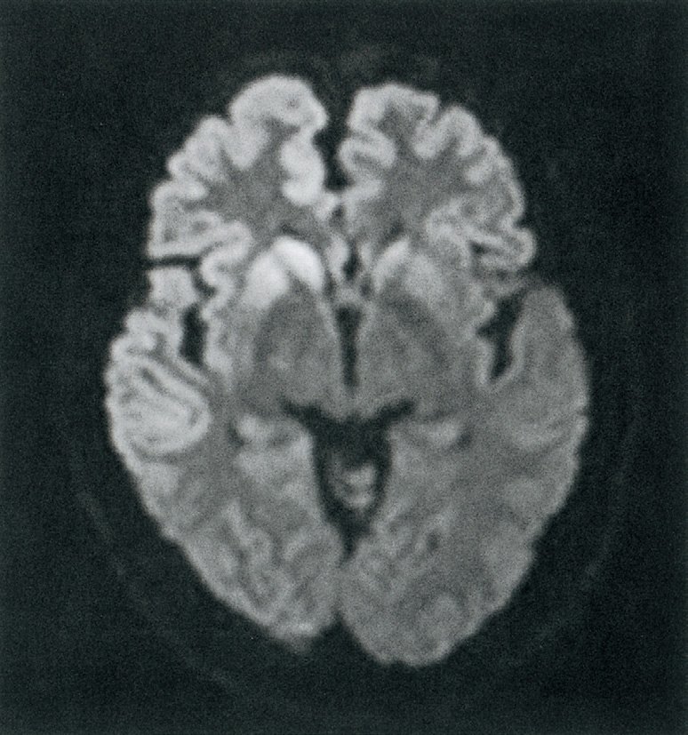
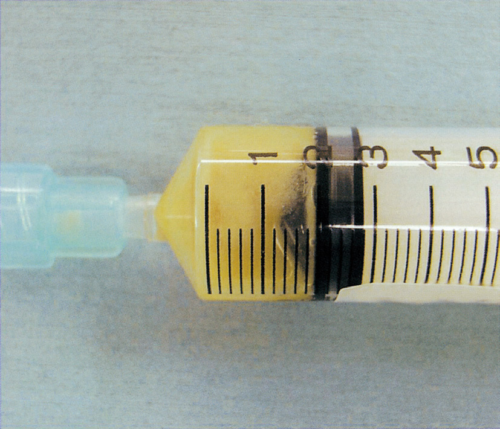
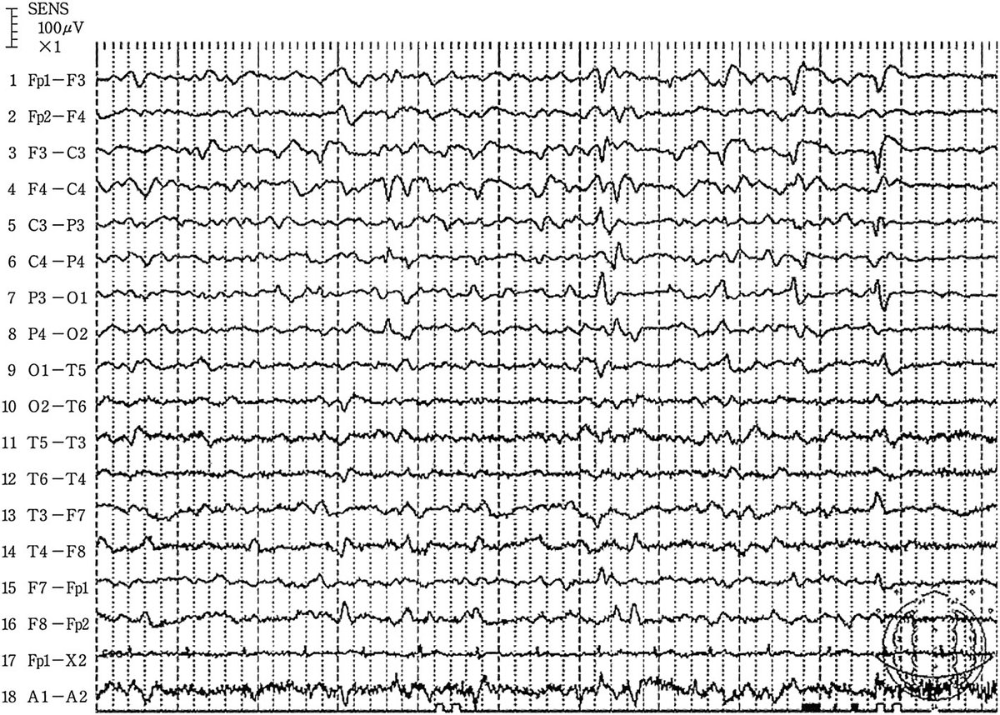
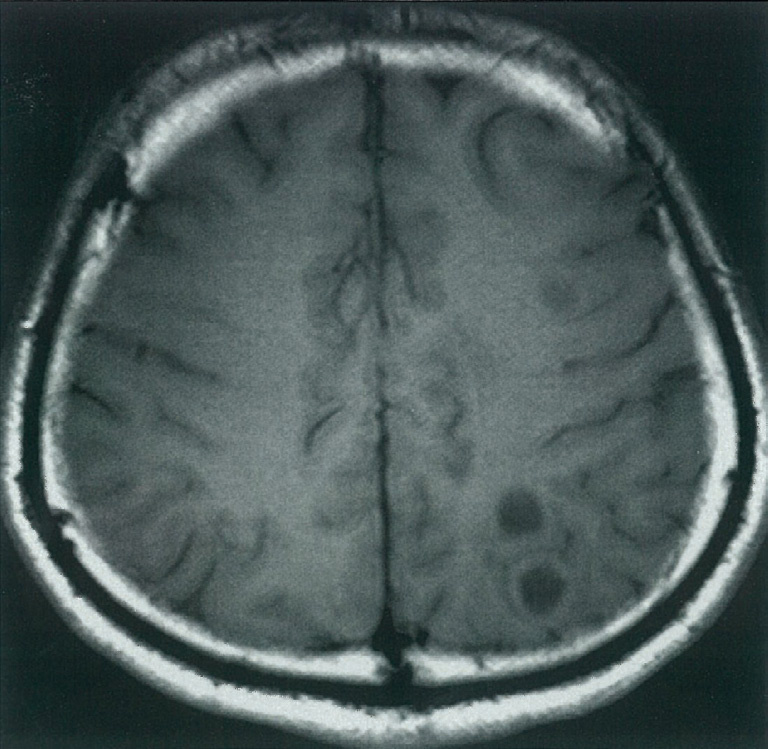
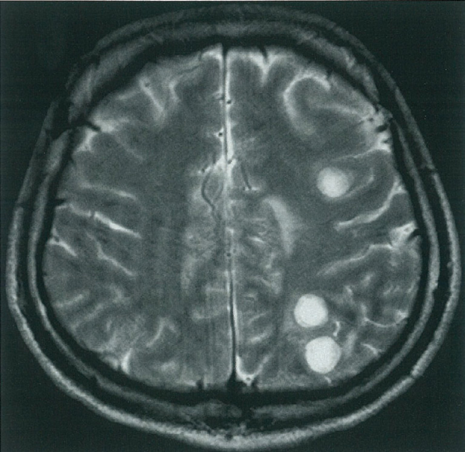
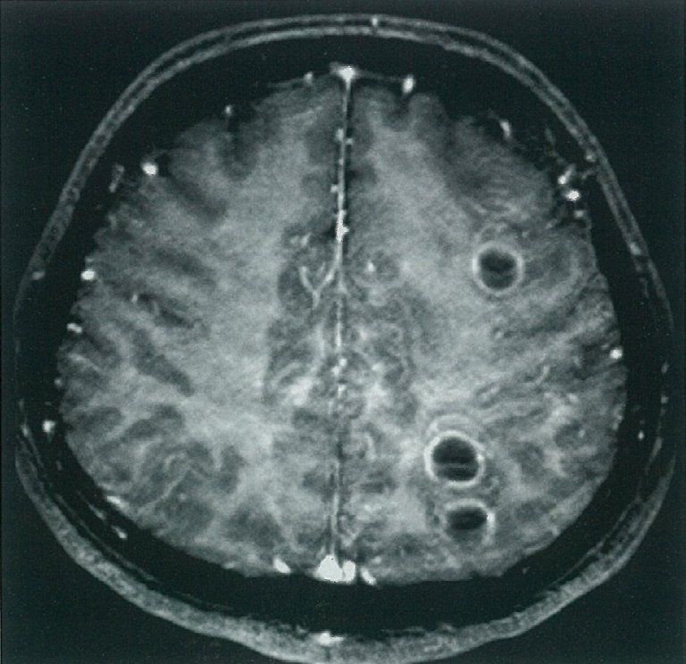

| 年齢 | 主要原因菌 |
| 新生児（0〜1か月） | B群溶連菌（GBS）・大腸菌・リステリア |
| 乳児〜5歳 | 肺炎球菌・髄膜炎菌 |
| 青壮年期 | 肺炎球菌・髄膜炎菌 |
| 高齢者 | 肺炎球菌・リステリア |
| 徴候 | 病態 |
| えくぼ徴候 | 顔面神経麻痺（Heerfordt症候群等） |
| Kernig徴候 | 髄膜刺激症候（髄膜炎・SAH） |
| Chvostek徴候 | 低Ca血症（テタニー） |
| Blumberg徴候 | 腹膜炎 |
| Grey-Turner徴候 | 後腹膜出血（急性膵炎等） |
| 種類 | 細胞 | 蛋白 | 糖 |
| 細菌性 | 好中球増多（>1000） | 著増 | 低下（血糖50%以下） |
| ウイルス性 | リンパ球増多（<500） | 軽度増加 | 正常 |
| 結核性 | リンパ球増多 | 著増 | 低下（+ADA↑） |
| 真菌性 | リンパ球増多 | 増加 | 低下（墨汁染色陽性） |
| 年齢 | 最多原因菌 |
| 新生児 | B群溶連菌・大腸菌 |
| 成人〜高齢者 | 肺炎球菌（最多） |
| 青壮年 | 肺炎球菌・髄膜炎菌 |
| 免疫不全・高齢 | リステリア |


| 診察 | 内容 |
| 項部硬直 | 仰臥位で頸部を他動的に前屈→抵抗（選択肢d） |
| Kernig徴候 | 仰臥位で股関節・膝90°屈曲→膝を伸展→抵抗（選択肢e） |
| Brudzinski徴候 | 頸部屈曲→膝関節・股関節が自動屈曲 |
| 選択肢a | 触診（圧痛）→Valleix圧痛点等） |
| 選択肢b | 眼振誘発（Dix-Hallpike等） |
| 選択肢c | Spurling試験（頸椎症） |



